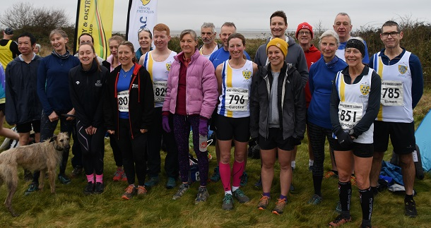

This year’s Kent Fitness League has been hard fought between the leading contenders, Sevenoaks AC, Petts Wood Runners, Canterbury Harriers and Dartford Harriers, writes Jim Knight. The series comprises 7 gruelling cross-country races starting in Knole Park in October, and touring the County with races in Swanley, Eltham, Minnis Bay, Deal, Canterbury and finally Allhallows Holiday Park near Rochester on February 12th.
The women’s team competition has been particularly close, with last year’s champions Sevenoaks AC battling to stay ahead of Canterbury Harriers. Sevenoaks won in Knole park and Swanley. Canterbury won in Minnis Bay and Deal. Both had one second and one third in the other races and went into the final race equal on points. So, it was all set for a winner-takes-all battle in Allhallows.
Sevenoaks fielded a slightly weakened team with star performer Andrea Berquez away and team captain Pauline Dalton recovering from illness. However, Canterbury also had some runners away for half term. On a slightly damp and misty day the 412 runners set off on 6 mile two-lap course. From the start field, they ran down to the beach for a long technical section along the shoreline where they faced gravel, mud, seaweed and ditches. Then back up to the start field to do it all again.
Sevenoaks’ Caroline Fenwick had another great run to come 7th (1st W45) but was behind the fastest Canterbury runner (Emily Collins) in 2nd place. Next came Nicola Glover and Julia Davis in 14th and 15th places, just ahead of Canterbury runners in 16th and 17th. So far so good. But a fast run by Canterbury’s W55 competitor, Nicky Leatherbarrow in 22nd, ahead of Sevenoaks fastest W55, 64 year old Bridgit Weekes in 38th position and Canterbury had just edged ahead.
The women’s race was won by Petts Wood Runners with Canterbury second and Sevenoaks third. So, Canterbury win the 2022/23 series by the slimmest of margins. Petts Wood pose a real threat to Sevenoaks and Canterbury in next year’s season and we can look forward to a really competitive 2023/24 season starting in October. As one team member said, “It’s been so much fun to be part of this team. Well done to all and bring on the 23/24 season”.
The scoring members in Allhallows were Caroline Fenwick, Nicola Glover, Julia Davis and Bridget Weekes. The SAC men fielded a team weakened by half term absences and came 9th on the day, and 5th in the series. The scoring men were:- Shaun Mullen, James Nash, Dan Witt, Leonard Lai King, Simon Bishop, Jeremy Winter, & Anthony Waldron. The combined team retained a highly creditable 3rd place in the series. The full Sevenoaks AC results were:
| Ov Pos | Lg Pos | Bib | Runner | Age | Time | Club | Score | Rtg | # |
|---|---|---|---|---|---|---|---|---|---|
| 58 | 54 | 1104 | Shaun Mullen | 46 | 42:14 | Sevenoaks AC | V40:1 | 79.46 | 12 |
| 71 | 65 | 829 | James Nash | 31 | 43:16 | Sevenoaks AC | M1 | 75.19 | 15 |
| 72 | 7 | 796 | Caroline Fenwick | 45 | 43:17 | Sevenoaks AC | V45 | 96.05 | 7 |
| 95 | 86 | 854 | Daniel Witt | 48 | 44:38 | Sevenoaks AC | V40:2 | 67.05 | 66 |
| 102 | 14 | 802 | Nicola Glover | 35 | 45:09 | Sevenoaks AC | V35 | 91.45 | 8 |
| 104 | 15 | 791 | Julia Davis | 25 | 45:26 | Sevenoaks AC | F1 | 90.79 | 12 |
| 105 | 90 | 811 | Leonard Lai King | 43 | 45:28 | Sevenoaks AC | M2 | 65.50 | 10 |
| 125 | 23 | 840 | Hannah Sangan | 28 | 46:27 | Sevenoaks AC | NSBLS | 85.53 | 6 |
| 139 | 24 | 801 | Vanessa Gilmartin | 47 | 47:25 | Sevenoaks AC | NSBLS | 84.87 | 28 |
| 140 | 116 | 785 | Simon Bishop | 59 | 47:25 | Sevenoaks AC | V50:1 | 55.43 | 6 |
| 141 | 25 | 815 | Catherine Linney | 53 | 47:27 | Sevenoaks AC | NSBLS | 84.21 | 43 |
| 153 | 31 | 828 | Katrina Murphy | 34 | 48:11 | Sevenoaks AC | NSBLS | 80.26 | 4 |
| 167 | 133 | 853 | Jeremy Winter | 69 | 48:47 | Sevenoaks AC | V60 | 48.84 | 10 |
| 175 | 138 | 849 | Anthony Waldron | 55 | 49:14 | Sevenoaks AC | V50:2 | 46.90 | 34 |
| 176 | 38 | 851 | Bridgit Weekes | 64 | 49:28 | Sevenoaks AC | V55 | 75.66 | 21 |
| 177 | 139 | 818 | Alan Male | 53 | 49:30 | Sevenoaks AC | M3 | 46.51 | 4 |
| 179 | 39 | 790 | Pauline Dalton | 58 | 49:37 | Sevenoaks AC | NS | 75.00 | 58 |
| 181 | 142 | 819 | Jonathan Marsh | 63 | 49:56 | Sevenoaks AC | NS | 45.35 | 6 |
| 191 | 43 | 833 | Anna O'Donovan | 22 | 50:48 | Sevenoaks AC | NS | 72.37 | 4 |
| 229 | 57 | 843 | Sarah Shewell | 63 | 53:00 | Sevenoaks AC | NS | 63.16 | 123 |
| 252 | 187 | 789 | Duncan Cochrane | 65 | 54:11 | Sevenoaks AC | NS | 27.91 | 42 |
| 283 | 79 | 839 | Ella Pyman | 56 | 56:03 | Sevenoaks AC | NS | 48.68 | 18 |

The full results are here.